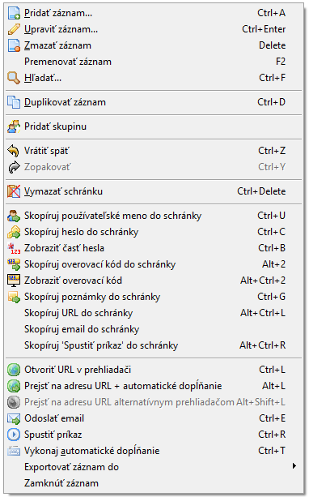
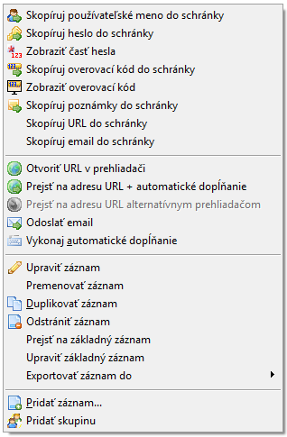
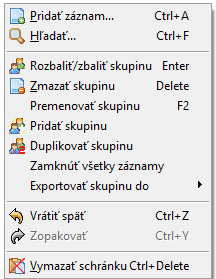
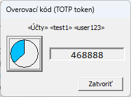
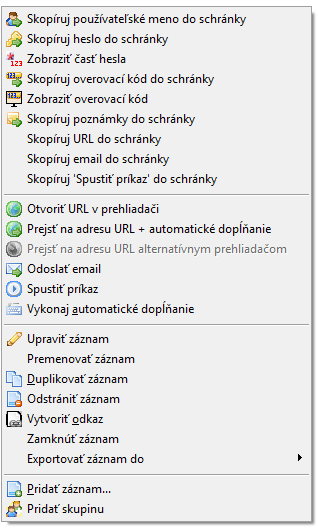
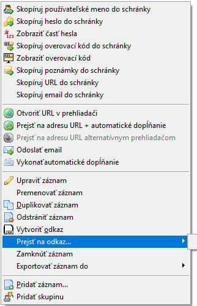
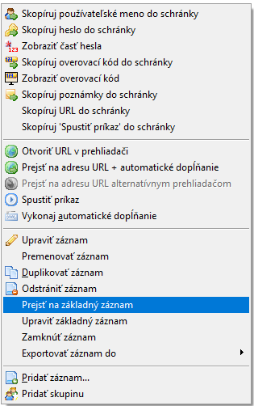
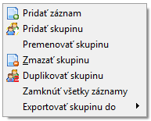

,
a predvolene má názov "Odkaz na x", kde x je názov pôvodného záznamu.
Názov odkazu môžete samozrejme upraviť, odkaz presunúť do inej skupiny alebo odstrániť, bez vplyvu na základný záznam na ktorý sa odkazuje.
,
a predvolene má názov "Odkaz na x", kde x je názov pôvodného záznamu.
Názov odkazu môžete samozrejme upraviť, odkaz presunúť do inej skupiny alebo odstrániť, bez vplyvu na základný záznam na ktorý sa odkazuje.| Záznam | Odkaz | Skupina | ||
|  |  |  |
Prostredníctvom menu Upraviť môžete pridávať, upravovať, používať a organizovať používateľské mená a heslá. Obsah tohto menu sa mení podľa toho, čo je vybraté v hlavnom zobrazení (napr. záznam alebo skupina). Niektoré položky môžu byť tiež deaktivované, ako je uvedené nižšie.
Pridá nové používateľské meno a heslo. Toto je deaktivované, ak je databáza otvorená iba na čítanie.
Ďalšie informácie nájdete v časti Používateľské mená, heslá a skupiny.
Keď je vybratý záznam, môžete upraviť používateľské meno a heslo a ďalšie údaje.
Keď je vybratá skupina (v stromovom zobrazení), táto možnosť rozbalí alebo zbalí
zobrazenie záznamov vo vybratej skupine. Úprava záznamu je zakázaná, ak je databáza otvorená iba na čítanie.
Ďalšie informácie nájdete v časti Používateľské mená, heslá a skupiny.
Keď je vybraný záznam, táto akcia ho odstráni. Keď je vybraná skupina (v stromovom zobrazení), táto akcia odstráni všetky záznamy vo vybranej skupine. Ak je vo vybranej skupine viac ako jeden záznam, vyžaduje sa potvrdenie. Táto akcia je zakázaná, ak je databáza otvorená iba na čítanie.
Premenuje vybraný záznam alebo skupinu v stromovom zobrazení. Táto možnosť je zakázaná, ak je databáza otvorená iba na čítanie.
Vyhľadá záznam obsahujúci daný text. Predvolene sa prehľadávajú všetky polia okrem poľa Heslo.
Ďalšie informácie nájdete v časti Vyhľadanie textu.
Duplikuje vybraný záznam alebo skupinu. Táto možnosť je zakázaná, ak je databáza otvorená iba na čítanie.
Vytvorí novú skupinu hesiel (napr. Bankové heslá). Táto možnosť je zakázaná, ak je databáza otvorená iba na čítanie.
Posledná akcia bude vrátená späť. Opakovanie príkazu vráti späť ďalšie akcie - v opačnom poradí, od poslednej po najstaršiu.
Posledná vrátená akcia (akcie) sa vykoná znova.
Vymaže pamäť schránky. Týmto sa v schránke vymaže všetko, čo tam bolo vložené pomocou Password Safe (heslo, používateľské meno, poznámky atď.). Ak aktuálny obsah schránky nepochádza z aplikácie Password Safe, potom toto nebude mať žiadny účinok.
Táto akcia zobrazí okno, ktoré vám umožní určiť, ktoré znaky hesla sa majú zobraziť. Toto je užitočné pre stránky, ktoré požadujú časti hesla na prihlásenie. Napríklad heslo môže byť "qAdm3ddENc" a môžete byť požiadaní o zadanie prvého, tretieho, piateho a ôsmeho písmena. Toto okno vám umožňuje urobiť to pohodlným spôsobom: Do horného poľa zadáte pozície znakov hesla, ktoré chcete použiť pre podmnožinu hesla. Na oddelenie pozícií môžete použiť medzery, čiarky alebo bodkočiarky. Zodpovedajúce znaky hesla sa zobrazia v dolnom poli, ktorého obsah potom môžete skopírovať do schránky. Na zatvorenie okna použite kláves Esc.
Ak bol pre aktuálne vybranú položku definovaný overovací kód, zobrazí sa táto akcia. Kliknutím naň sa aktuálny 6-miestny overovací kód skopíruje do schránky. Schránka sa automaticky aktualizuje po zmene overovací kódu, napr. po uplynutí 30 sekúnd.
Ak bol pre aktuálne vybranú položku definovaný overovací kód, zobrazí sa táto akcia.
Kliknutím naň sa zobrazí okno zobrazujúce aktuálny overovací kód, ako aj animované tlačidlo označujúce čas,
počas ktorého bude kód aktuálny. Kliknutím na tlačidlo sa kód skopíruje do schránky.

Poznámka: Premenné budú nahradené ich hodnotami, pokiaľ nie je pri výbere tejto položky ponuky stlačený kláves Ctrl.
Keď je vybratý záznam a k nemu je priradená URL adresa, spustí sa predvolený prehliadač pre URL adresu. Ak nie je vybratý žiadny záznam alebo je URL adresa vybratého záznamu prázdna, tento príkaz bude zakázaný.
Poznámka: Pokiaľ to nie je vypnuté na karte "Zabezpečenie" v Nastaveniach, heslo záznamu sa automaticky skopíruje do schránky.
Keď je je vybratý záznam a k nemu je priradená URL adresa, spustí sa predvolený prehliadač pre danú URL adresu. Ak nie je vybratý žiadny záznam alebo je URL adresa vybratého záznamu prázdna, tento príkaz bude zakázaný.
Automaticky zadá používateľské meno a heslo do vybratého vstupného poľa v prehliadači.
Ďalšie informácie nájdete v časti Používanie AutoType.
Pripraví email na odoslanie s údajmi z poľa emailu aktuálneho záznamu.
Uistite sa, že máte v počítači nainštalovaný emailový klient.
Ďalšie informácie nájdete v časti Používateľské mená, heslá a skupiny.
Táto akcia vykoná príkaz v poli Spustiť príkaz vybraného záznamu.
Ďalšie informácie nájdete v časti Používanie akcie Spustiť príkaz.
Automaticky zadá používateľské meno a heslo do vybratého vstupného poľa v prehliadači alebo v inom programe.
Ďalšie informácie nájdete v časti Používanie automatického písania.
Keď je záznam vybraný, môžete vytvoriť odkaz na tento záznam, zvyčajne sa to robí v inej skupine.
Toto je užitočné, ak máte záznam, ktorý "patrí" do viacerých skupín, ale nechcete duplikovať údaje
ako je heslo ktoré treba často meniť. Odkaz má priradenú samostatnú ikonu
,
a predvolene má názov "Odkaz na x", kde x je názov pôvodného záznamu.
Názov odkazu môžete samozrejme upraviť, odkaz presunúť do inej skupiny alebo odstrániť, bez vplyvu na základný záznam na ktorý sa odkazuje.
Táto položka sa zobrazí iba pre odkaz alebo alias. Po kliknutí na Prejsť na základný záznam sa vyberie zodpovedajúci základný záznam.
Táto položka sa zobrazí iba pre odkaz alebo alias. Po kliknutí na Upraviť základný záznam môžete upraviť zodpovedajúci základný záznam pre tento odkaz alebo alias.
Vybraný záznam alebo všetky záznamy vo vybranej skupine sa exportujú ako obyčajný text.
Pred exportom budete požiadaní o zadanie hlavnej prístupovej frázy ako potvrdenie, že chcete exportovať údaje z databázy do nešifrovaného textového súboru.
Vybraný záznam alebo všetky záznamy vo vybranej skupine budú exportované vo formáte XML. Pred exportom budete požiadaní o zadanie hlavnej prístupovej frázy ako potvrdenie, že chcete exportovať údaje z databázy do nešifrovaného súboru XML.
Vybraný záznam alebo všetky záznamy vo vybranej skupine budú exportované ako nová databáza Password Safe. Pred exportom budete požiadaní o zadanie hlavnej prístupovej frázy ako potvrdenie, že chcete exportovať údaje z databázy do inej databázy. Taktiež budete musieť zadať novú prístupovú frázu pre novú databázu Password Safe.
Ďalšie informácie nájdete aj v časti Export záznamov.
Vybraný záznam alebo skupina záznamov bude zamknutá. Zamknutý záznam nie je možné upraviť, kým nie je odomknutý. Zamknuté záznamy sú označené ikonou zámku alebo znakom '#'.
Všetky príkazy v menu Upraviť sú dostupné aj kliknutím pravým tlačidlom myši na príslušný záznam, odkaz alebo skupinu.
Okrem toho, po kliknutí pravým tlačidlom myši na záznam na ktorý je vytvorený nejaký alias alebo odkaz, sa zobrazí ďalšia podponuka ("Prejsť na alias..." a "Prejsť na odkaz..."), ktorá umožňuje jednoduchý prístup k ich príslušným závislým položkám, t.j. aliasom alebo odkazom. Hoci všetky závislé položky budú v novej podponuke, niektoré môžu byť deaktivované, ak je napríklad aktívny filter a položka nie je viditeľná alebo ak existuje viac ako maximálny počet 25 závislých položiek, na ktoré sa táto funkcia môže odvolávať.
| Záznam | Základný záznam - Alias | Základný záznam - Odkaz | Alias | Skupina | ||||
|  |  |
 |  |  |
Všetky príkazy sú popísané v predchádzajúcom odseku.